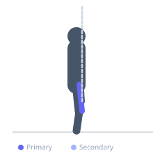

Exercise guide / Terminal Knee Extension — Band Hold and Pulse
Terminal Knee Extension — Band Hold and Pulse
A terminal knee extension variation that adds an isometric hold followed by small pulsing contractions at the point of full knee extension. After extending the knee against band resistance, the exerciser holds the extended position for 2-3 seconds and then performs 5-8 short pulsing contractions before returning. This technique maximizes VMO (vastus medialis oblique) activation time and is used in patellofemoral rehabilitation programs targeting quad insufficiency at terminal extension, common after ACL reconstruction and knee arthroplasty.
Primary muscles
vastus medialis
rectus femoris
Secondary muscles
vastus lateralis
vastus intermedius
Equipment
Resistance Band (Loop / Mini Band)


Starting position
- Stand facing away from a resistance band anchor with the band looped around the back of the knee. Begin with a slight knee bend (20-30 degrees of flexion).
Setup
- Anchor the band behind and above knee height. The band should provide noticeable resistance against knee extension.
Steps
- Step 1: Begin with the knee in slight flexion against the band's pull.
- Step 2: Extend the knee to full extension, contracting the quadriceps, particularly the inner quad (VMO).
- Step 3: Hold the fully extended position for 2-3 seconds.
- Step 4: Perform 5-8 small pulsing contractions (tiny additional squeezes) at full extension, then slowly return the knee to the starting flexion position. That is one repetition.
Coaching cues
- Feel the inner quad (teardrop muscle above the kneecap) contracting during the hold
- Pulses should feel like extra squeezes, not additional movement
- Press the kneecap upward at the top of each extension
Breathing
- Exhale during the extension. Breathe during the hold and pulses. Inhale as you return.
Range of motion
- Full knee extension (0 degrees) must be reached before the hold. The pulses occur at this end range.
Tempo
- 2s extension, 3s hold, 5-8 pulses at ~1s each, 2s slow return.
Common mistakes
- Not reaching full knee extension before the hold — partial extension reduces VMO activation
- Pulses becoming large movements rather than small squeezes at the end range
- Locking the knee so hard that the popliteal fossa compresses painfully
Safety
- Avoid if hyperextension of the knee is contraindicated — stop at neutral extension (0 degrees)
- For post-surgical use: confirm full extension range is cleared by the treating physiotherapist
Training
- endurance: 8–15 reps
- endurance: 2–3 sets
- Rest: {'endurance': 60}